연삭기능사 (2002-07-21 기출문제)
1과목: 기계가공법 및 안전관리
1. 관습상 선반의 크기를 나타내는 방법은?
- 베드의 폭
- 베드의 길이
- 테이블의 크기
- 테이블의 이동거리
(정답률: 알수없음)

2. 직경 30mm인 환봉을, 318rpm으로 선반 가공 할 때의 절삭속도는 약 몇 m/min인가?
- 30
- 40
- 50
- 60
(정답률: 알수없음)
3. 원판 안에 설치된 전자석을 자화시켜 일감을 고정하는 형태의 선반 척은?
- 단동척
- 압축공기척
- 연동척
- 마그네틱척
(정답률: 알수없음)
4. 선반가공에서, 55° 의 센터게이지 (center gage) 는 어떤 경우에 사용하는가?
- 바이트의 중심을 맞추는 게이지
- 미터 나사의 각도를 맞추는 게이지
- 55° 의 테이퍼 절삭시 사용하는 게이지
- 위트워드 나사 절삭시 바이트 각도를 맞추는 게이지
(정답률: 알수없음)
5. 선반에서 ø 35mm 일감을 1400 rpm 으로 회전시켜 1분간에 70mm 를 절삭하였다. 이때, 바이트 날끝 반경이 0.8mm 였다면 가공면 거칠기의 최대 높이(이론값)는 얼마인가?
- 0.39 μm
- 0.51 μm
- 0.75 μm
- 0.83 μm
(정답률: 알수없음)
6.
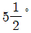
를 분할 크랭크를 이용하여 분할할 때 맞는 것은?- 11구멍열에서 18구멍 이동시킨다.
- 11구멍열에서 11구멍 이동시킨다.
- 18구멍열에서 18구멍 이동시킨다.
- 18구멍열에서 11구멍 이동시킨다.
(정답률: 알수없음)
7. 연삭에서 결합제를 금속으로 사용하는 숫돌 바퀴는?
- 탄성 숫돌
- 다이아몬드 숫돌
- 비트리파이드 숫돌
- 실리케이트 숫돌
(정답률: 알수없음)
8. 일감에 여러개의 구멍을 뚫고자 할 때 일감을 움직이지 않고 스핀들을 움직여서 구멍을 뚫는 기계는?
- 벤치 드릴링 머신
- 레이디얼 드릴링 머신
- 수평식 드릴링 머신
- 직립 드릴링 머신
(정답률: 알수없음)
9. 치형을 깎는 방법이 아닌 것은?
- 총형커터에 의한 방법
- 형판에 의한 방법
- 창성법에 의한 방법
- 바이트에 의한 방법
(정답률: 알수없음)
10. 1회로 완성가공이 되는 것은?
- 세이퍼가공
- 밀링가공
- 브로칭가공
- 지그보링가공
(정답률: 알수없음)
11. 래핑(lapping)의 효과에 해당되지 않는 것은?
- 제품의 정밀도가 향상된다.
- 내마모성이 증가한다.
- 마찰계수가 커져서 미끄럼면이 원활하게 된다.
- 축과 베어링과의 관계에서, 베어링 하중의 증가에 잘 견딜 수 있다.
(정답률: 알수없음)
12. 마이크로미터에서 측정압을 일정하게 하기위한 장치는?
- 스핀들
- 프레임
- 딤블
- 래칫스톱
(정답률: 알수없음)
13. 마이크로미터의 사용 후 스핀들(spindle)과 앤빌(anvil)사이의 보관 방법으로 가장 옳은 것은?
- 약간 틈새를 주어 보관한다.
- 완전히 밀착시켜 둔다.
- 기름 헝겁을 끼워 꽉 조여 둔다.
- 예비 시험편을 사이에 밀착시켜 보관한다.
(정답률: 알수없음)
14. 일정한 치수와 모양만을 검사하는 데 사용하는 것으로 숙련되지 않아도 정확하게 측정할 수 있는 것은?
- 지침 측미기
- 한계 게이지
- 전기 마이크로 미터
- 하이트 마스터
(정답률: 알수없음)
15. 밀링작업에서 보안경을 착용하는 가장 큰 이유는?
- 커터날 끝이 부러져 튀기 때문
- 주유가 비산하기 때문
- 공작물이 튈 염려가 있기 때문
- 칩의 비산이 있기 때문
(정답률: 알수없음)
16. 큰 정맥에서 출혈시 응급 조치 사항은?
- 온습포를 실시한다.
- 냉습포를 실시한다.
- 압박붕대를 감는다.
- 물로 씻는다.
(정답률: 알수없음)
17. 미터나사에서 지름 12mm, 피치 1.5mm의 나사를 태핑하기 위한 드릴구멍의 지름으로 가장 적당한 것은?
- 9.5 mm
- 10.5 mm
- 11.5 mm
- 13.5 mm
(정답률: 알수없음)
18. 다이얼게이지로 원통체 공작물의 진원도를 측정하고자 할 때 꼭 필요한 것은 어느 것인가?
- 서피스 게이지
- V 블록
- 버니어캘리퍼스
- 사인바
(정답률: 알수없음)
19. 밀링 작업 중 하향 절삭의 단점은?
- 공작물 고정이 불안정하다.
- 날의 마멸이 심하다.
- 뒤틈 제거 장치(back lash)가 필요하다.
- 가공면이 거칠다.
(정답률: 알수없음)
20. 회전하는 원통일감의 표면에 무른 결합도의 숫돌을 눌러대고, 일감의 회전방향에 대하여 수직방향으로 짧은 진폭과 급속한 왕복운동(진동)으로 축방향을 이송하며 가공하는 방법은?
- 호우닝
- 래핑
- 버핑
- 슈퍼피니싱
(정답률: 알수없음)
2과목: 기계재료 및 요소
21. 절삭제의 역할과 거리가 먼 것은?
- 공구의 냉각을 돕는 역할을 한다.
- 공구와 칩의 친화력을 돕는 역할을 한다.
- 공작물의 냉각을 돕는 역할을 한다.
- 가공표면의 방청 작용 및 녹의 방지작용을 한다.
(정답률: 알수없음)
22. 세이퍼에서 램의 행정기구는?
- 램은 급속 귀환운동을 한다.
- 램은 등속도운동을 한다.
- 절삭행정은 빠르고 귀환행정은 느리다.
- 절삭행정과 귀환행정은 같다.
(정답률: 알수없음)
23. 아래 그림은 옵티컬 플랫으로 평면을 투사한 결과 나타난 것이다. 요철면을 가장 많이 나타낸 것은?
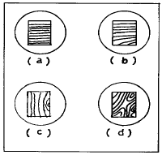
- a
- b
- c
- d
(정답률: 알수없음)
24. 밀워키형 분할대에서 분할대의 주축과 분할 크랭크의 회전비는 얼마인가?
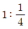
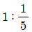
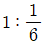
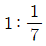
(정답률: 알수없음)
25. 터릿선반의 장점이 아닌 것은?
- 동일제품 가공시 드릴링 및 연삭작업이 가능하다.
- 공구 교체시간이 단축된다.
- 절삭공구를 방사형으로 장착한다.
- 대량생산에 적합하다.
(정답률: 알수없음)
26. 리드 스크루가 4산/인치인 선반에서 11산/인치의 나사를 깎을 때, 변환 기어를 구하면? (단, A:주축에 설치하는 기어의 잇수, B:리드 스크루측의 기어 잇수이다. )
- A:60, B:50
- A:30, B:100
- A:50, B:120
- A:40, B:110
(정답률: 알수없음)
27. 밀링작업의 안전사항으로 잘못 설명된 것은?
- 절삭 중 칩 제거는 칩 브레이커로 한다.
- 측정시에는 기계를 정지시킨다.
- 일감을 풀어내거나 고정할 때에는 기계를 정지시킨다.
- 상하 좌우의 이송장치의 핸들은 사용후 풀어 놓는다.
(정답률: 알수없음)
28. 바이트가 램에 고정되어 수직 왕복운동을 하고 일감은 수평 방향으로 단속적으로 이송하며 주로 내면을 가공하는 공작 기계는?
- 슬로터
- 브로칭
- 세이퍼
- 선반
(정답률: 알수없음)
29. 나사 마이크로 미터가 측정하는 것은?
- 나사의 호칭지름
- 나사의 바깥지름
- 나사의 골지름
- 나사의 유효지름
(정답률: 알수없음)
30. 버니어 캘리퍼스에서, 어미자의 눈금선 간격이 1mm 이고 아들자의 눈금은 어미자 19mm를 20등분 하였다면 아들자로 읽을 수 있는 최소 측정값은?
- 1/20mm
- 1/18mm
- 1/15mm
- 1/10mm
(정답률: 알수없음)
31. KS 규격에서 안전색깔과 그에 알맞는 안전표지 내용을 잘못 연결시킨 것은?
- 자주 : 방사능
- 빨강 : 정지
- 주황 : 위험
- 파랑 : 구호
(정답률: 알수없음)
32. 니이형 밀링머신의 종류에 해당되지 않는 것은?
- 플레인 밀링 머신
- 만능 밀링 머신
- 수직 밀링 머신
- 편위 밀링 머신
(정답률: 알수없음)
33. 밀링 머신의 일반적인 크기 표시는?
- 밀링 머신의 최고 회전수로 한다.
- 밀링 머신의 높이로 한다.
- 테이블의 이동거리로 한다.
- 깎을 수 있는 공작물의 최대 길이로 한다.
(정답률: 알수없음)
34. 다음 그림과 같은 밀링 작업은?
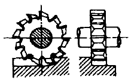
- 플레인 밀링 작업
- 각도 밀링 작업
- 옆면 밀링 작업
- 절단 작업
(정답률: 알수없음)
35. 원통 연삭기 중 숫돌을 테이블과 직각으로 이동시켜 연삭하는 형식으로 테이퍼형, 곡선 윤곽 등의 전체 길이를 동시에 연삭할 수 있는 생산형 연삭기의 형태는?
- 플런지 컷형
- 만능형
- 숫돌대 왕복형
- 테이블 왕복형
(정답률: 알수없음)
36. 철강 중에 함유된 5 대 원소는?
- C, Ni, Cr, P, S
- C, Si, Mn, P, S
- C, Sn, Mo, P, S
- Cr, Si, Mo, P, S
(정답률: 알수없음)
37. 다음 원소 중 고속도강의 주요 성분이 아닌 것은?
- 니켈
- 텅스텐
- 바나듐
- 크롬
(정답률: 알수없음)
38. 내식성이 우수하고 주조성과 단련이 잘되어 화학 공업용으로 널리 사용되는 합금으로서 니켈 65∼70%, 철 1.0∼3.0% 나머지는 구리로 된 합금은?
- 모넬메탈(Monel metal)
- 도우메탈(Dow metal)
- 어드밴스(Advance)
- 인코넬(Inconel)
(정답률: 알수없음)
39. 고속도 큰하중의 베어링에 적합하고 유동성과 주조성이 좋으므로 큰 베어링으로 만들기가 용이하며 Sn 75∼90%, Sb 3∼15%, Cu 3∼10% 정도의 성분으로 이루어진 베어링 메탈은?
- 켈밋 합금
- 안티프릭숀 메탈
- 배빗 메탈
- 베네딕트 메탈
(정답률: 알수없음)
40. 다음 그림에서 3140 ㎏f의 전단하중 W가 작용할 때, 볼트에 생기는 전단응력은 약 몇 ㎏f/mm2 정도인가? (단, 볼트의 지름 d=20mm 이다)
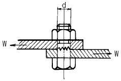
- 5
- 10
- 15
- 20
(정답률: 알수없음)
3과목: 기계제도(절삭부분)
41. 30개의 이를 가지고 있는 기어가 있다. 피치원의 지름이 90mm라면 기어의 원주 피치는 얼마인가?
- 8.46mm
- 9.42mm
- 3.00mm
- 6.24mm
(정답률: 알수없음)
42. 나사의 리드가 피치의 2배인 경우 몇 줄 나사인가?
- 1줄 나사
- 2줄 나사
- 3줄 나사
- 4줄 나사
(정답률: 알수없음)
43. 다음 중 금속재료의 물리적 성질이 아닌 것은?
- 열전도율
- 선팽창 계수
- 비중
- 연신율
(정답률: 알수없음)
44. 구상흑연 주철을 조직에 따라 분류할 때 포함되지 않는 것은?
- 페라이트형
- 오스테나이트형
- 시멘타이트형
- 펄라이트형
(정답률: 알수없음)
45. 보의 일부가 받침점 바깥으로 나와 있는 보는?
- 내닫이보
- 단순 지지보
- 외팔보
- 고정보
(정답률: 알수없음)
46. 마찰차의 응용 범위가 아닌 것은?
- 속도비가 중요하지 않을 때
- 전달할 힘이 클 때
- 회전속도가 클 때
- 두 축 사이를 단속할 필요가 있을 때
(정답률: 알수없음)
47. 재료의 점성강도를 측정하는 것으로 재료를 파괴할 때 재료의 인성 또는 취성을 시험하는 것은?
- 피로시험
- 비틀림 시험
- 충격시험
- 굽힘시험
(정답률: 알수없음)
48. 축 방향에 하중이 작용할 때 횡단면에 대해 경사된 단면에서 전단응력이 최대가 되는 경사각은 몇 도인가? (단, π 는 180° 이다.)
- π
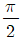
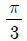
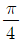
(정답률: 알수없음)
49. 스프링이 반복하중을 받을 때 그 반복속도가 스프링의 고유진동수에 가까워지면 심한 진동을 일으켜 스프링 파손의 원인이 된다. 이 현상을 무엇이라 하는가?
- 서징(surging)
- 포징(forging)
- 채터링(chattering)
- 호닝(honing)
(정답률: 알수없음)
50. v 벨트의 속도비는 보통 얼마 정도인가?
- 7 : 1
- 4 : 2
- 10 : 7
- 14 : 9
(정답률: 알수없음)
51. 다음 입체도와 같은 형상을 그린 평면도에서의 표시 단면을 무엇이라 하는가?
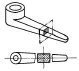
- 회전단면
- 방사단면
- 계단단면
- 부분단면
(정답률: 알수없음)
52. 다음 그림에서 현의 치수기입이 올바르게 된 것은?
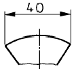
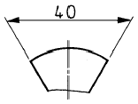
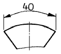
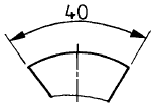
(정답률: 알수없음)
53. 헐거운 끼워맞춤에서 구멍의 최대 허용치수와 축의 최소 허용치수와의 차는 무엇인가?
- 최소틈새
- 최대틈새
- 최소죔새
- 최대죔새
(정답률: 알수없음)
54. 보기의 표면 거칠기 기호 중 G 와 M 및 6.3, 2.5의 설명으로 올바른 것은?
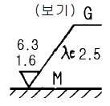
- G는 녹색 도장을 의미한다.
- 6.3은 컷 오프값 6.3mm이다.
- 최대높이 거칠기값이 2.5mm이다.
- M는 가공에 의한 커터의 줄무뉘가 여러방향으로 교차 또는 무방향이다
(정답률: 알수없음)
55. 보기 입체도를 제 3각법으로 올바르게 투상한 것은?
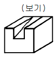
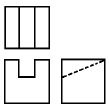
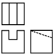
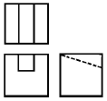
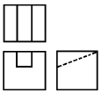
(정답률: 알수없음)
56. 보기와 같은 입체의 제 3각 투상도로 가장 적합한 것은?
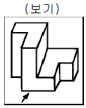
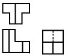
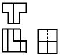
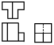
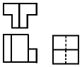
(정답률: 알수없음)
57. 제 3각법으로 투상한 보기의 정면도와 우측면도에 가장 적합한 평면도는?
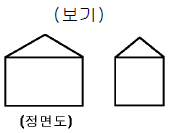
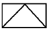
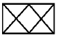
(정답률: 알수없음)
58. 다음 위치 및 형상에 관한 공차기호 중 평행도를 나타내는 것은?
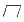
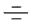
(정답률: 알수없음)
59. 보기의 입체도를 충분히 나타내기에 필요한 투상도면의 수로 가장 적합한 설명은?
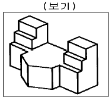
- 정면도 하나면 충분
- 측면도 하나면 충분
- 정면도와 측면도면 충분
- 정면도, 평면도, 측면도의 3면도가 필요
(정답률: 알수없음)
60. 평벨트 풀리의 호칭 방법으로 가장 적합한 것은?
- 종류 · 명칭 · 재질 · 호칭지름
- 종류 · 명칭 · 호칭지름 · 재질
- 명칭 · 종류 · 재질 · 호칭지름
- 명칭 · 종류 · 호칭지름 × 호칭나비 · 재질
(정답률: 알수없음)